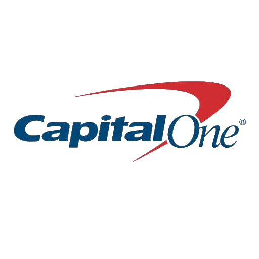
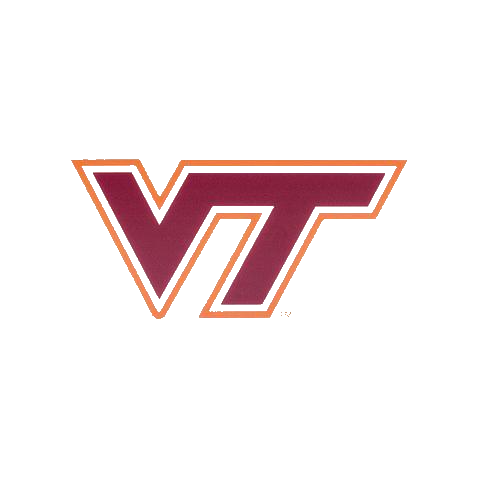
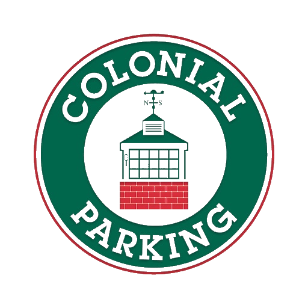

Technology Development Program - Software Engineer @ Capital One (August 2021 - Present)
- In my 1st rotation of the Capital One TDP Program, I am working on the automated product decisioning and orchestration for C1's credit offering system, hosted in the cloud.
- Aggregate data with flexible structures and minimal transformation from partners, credit bureaus, and other sources
- Choreograph modular components via an orchestration framework that uses configurable flows
- Heavy leveraging of AWS services (most commonly ECS, EC2 w/ ASG, IAM, CloudWatch)
- Coordination with multiple teams to provide consistent releases, effective CI/CD, and high durability for a smooth customer experience
- Rotating on-call support to provide solutions and support for clients within Card Tech
- Languages Used:
- Java w/ in-house solutions for deployment and secure data streaming
- PostgreSQL for DB management
- Zsh scripting to automate a typically complex, time-consuming setup for clients familiarizing themselves with our product.
- Tools Used:
- CI/CD: Enterprise Jenkins, Sonar
- Data: Splunk, Confluence
- Cloud: AWS Lambda, EC2, IAM, RDS, CloudWatch, CloudTrail
- Security: CloudSentry, WhiteSource
- Development: Apache Maven, Hercules, Git, IntelliJ IDEA
|

|
Precision Feeding Research @ Virginia Tech (Oct 2020 - May 2021)
- Developed front-end demo site in PHP and MySQL as a basis for students to develop a full front end
- Develop backend functions in R to connect MySQL to application and perform statistical calculations
- Organize meetings and provide feedback to students on development
- Product serves as a middleman between VT machine-learning algorithms and local farms in Blacksburg to assist in detecting health problems with livestock and potential sources of illness
|

|
Teaching Assistant @ Virginia Tech (Jan 2021 - May 2021)
- TA for Intro to Web Development and GUI Programming (CS3744 @ VT)
- Meet weekly with students to help them get stronger understanding in front-end design concepts
- Hold regular office hours for students to come and ask questions about the course content
- Grade classwork and evaluate student performance
|
|
Software Engineering Intern @ Capital One (May 2020 - Aug 2020)
- Our summer project was so successful here that the company began to replicate our efforts in other lines of business
- Rebuilt an existing tool to be multi-threaded and quickly debug large, complex Maven projects based on in-house solutions. Reduced support time to find issues in the projects from 1hr+ to <5 minutes
- Improved an existing Slack bot using AWS Lambda to track common sources of support requests, common keywords to determine where customers need the most assistance, and a system to track issues and mark them as resolved
- Integrated the multi-threaded debugging tool into the Slack bot using Enterprise Jenkins and S3, which allowed customers to take advantage of it directly and get user-friendly, stylized output via static HTML on S3. Significantly
reduced support required from the development team
- Worked in an agile development environment using Jira to track sprints and stories
- Utilized two weeks of provided self-learning to become more familiar with Golang, web scraping, CI/CD concepts, Travis CI, and Heroku
|
|
IT Network / Technical Writing Intern @ Colonial Parking (Jun 2019 - Mar 2020)
- Administered Microsoft Active Directory / Office 365 environment
- Ordered, setup, and installed new PCs for end user staff
- Created documentation for systems, common processes, and common procedures
- Diagnosed and resolved HelpDesk tickets in all general IT / phone service areas
|

|
Discord Bot Scripter (Freelance) (Nov 2018 - Jan 2019)
- Utilized Reddit PRAW API to automate server advertising
- Developed a Javascript Bot to automate several server processes
- Coordinated with administrators to optimize marketing
|
|
Student Worker @ Virginia Tech Dining Services (Nov 2017 - May 2019)
- Trained new team members
- Food production in a fast-paced environment
|
|